Everything here is live and in use. The task, what we did, and where it is now.
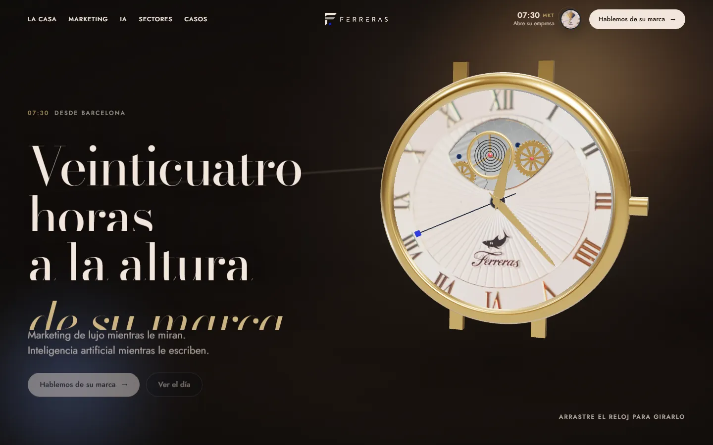
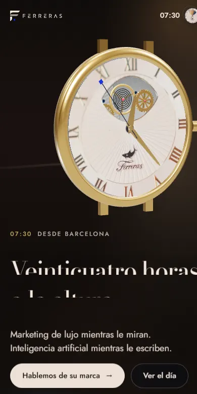
01 · Luxury marketing agency · Barcelona
Ferreras
Website redesignBrandVideo
The task
The agency sells marketing to luxury brands, but its old site looked like a template — the opposite of what it sells.
What we did
One signature idea from the business: a watch dial that tells the agency’s 24 hours
Video-first hero, one hook per screen, short phone scroll
Editorial typography and a layout of its own for the phone
Brief form that works without a backend
Now
A site that looks like the brands it works for, in Spanish and English.
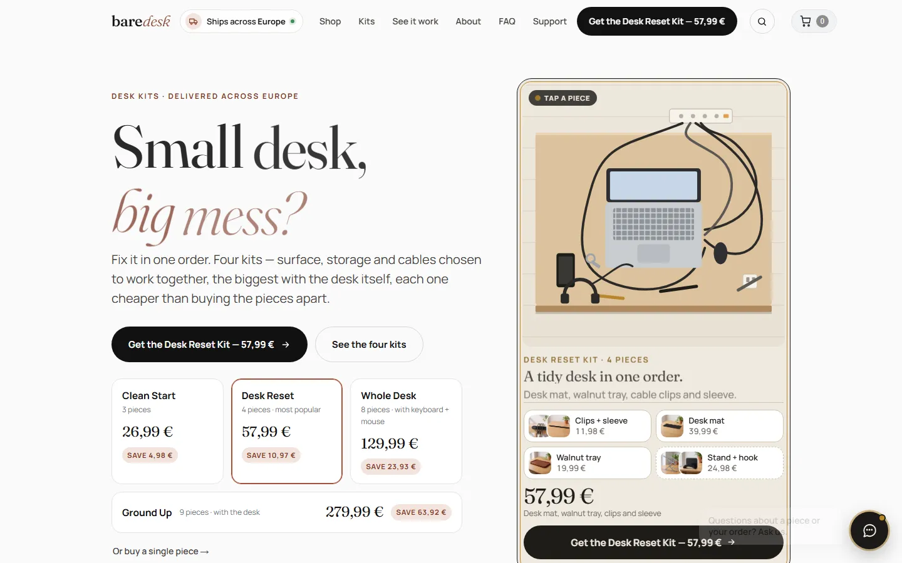
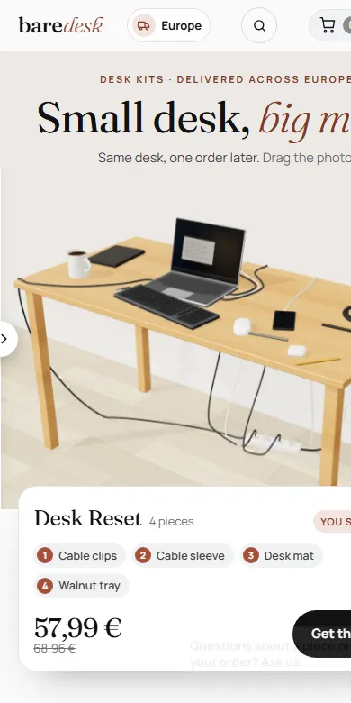
02 · E-commerce · Europe
BareDesk
Online storeBrandProduct pages
The task
A store of desk accessories competing with marketplaces on price alone.
What we did
Brand and store theme built around “small desk, big mess?”
Kits instead of single items, so every order is bigger
The kit builds itself on the photo as you choose
Product pages that answer the questions before checkout
Now
A store that sells a solution (a tidy desk), not a list of cables.
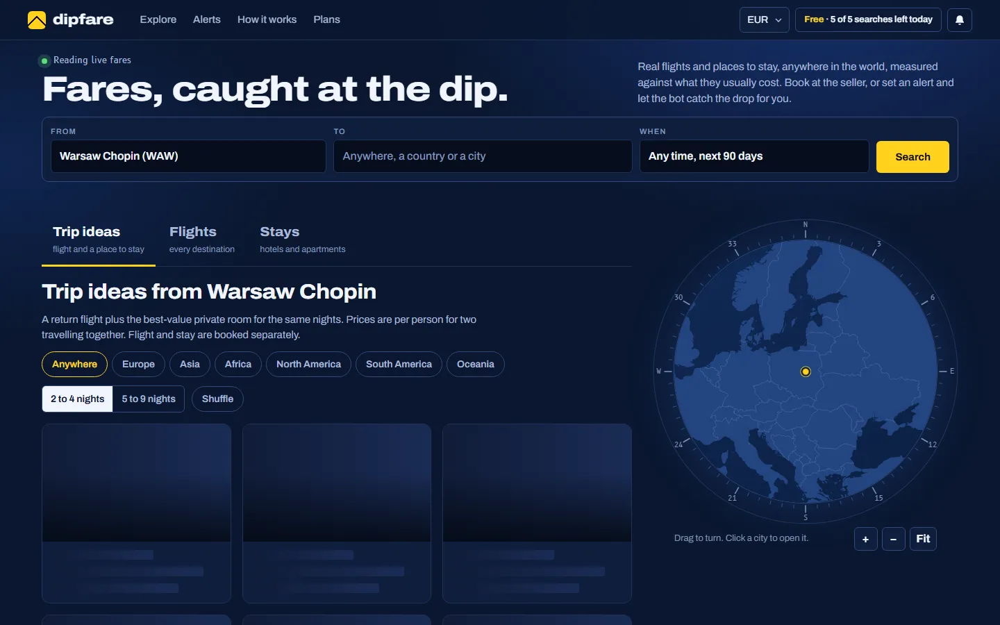
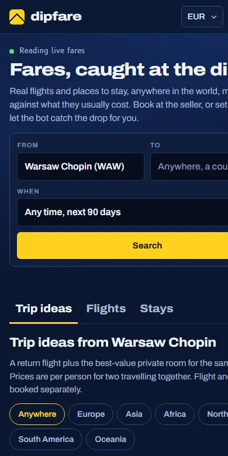
03 · Travel product
Dipfare
Web appDataAlerts
The task
Cheap flights exist for a few hours; people find them too late.
What we did
Live fares straight from the airlines
Trip ideas by budget and dates
Interactive globe to explore routes
Alerts when a route drops in price
Now
A working web app that catches fares at the dip.
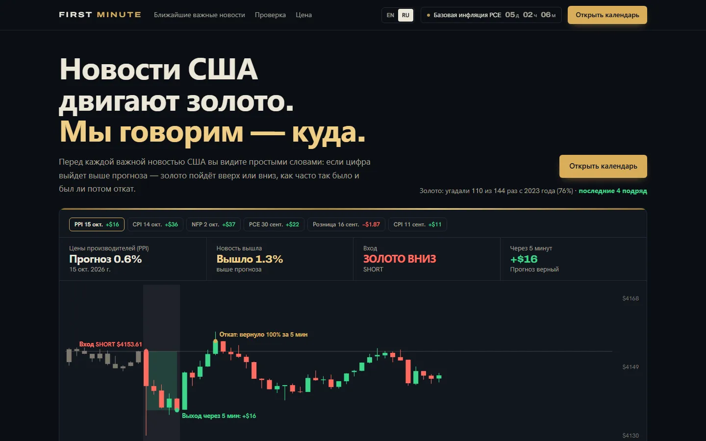
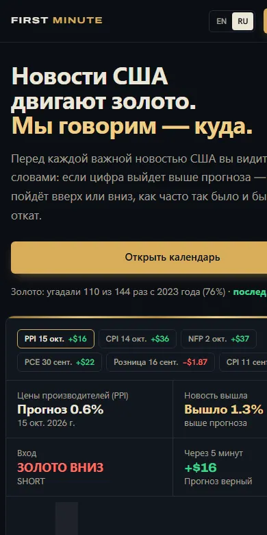
04 · Fintech · subscription
First Minute
LandingData researchEN / RU
The task
Traders want to know what a US news release will do to gold — before the minute it comes out.
What we did
Research on minute data of every release since 2018
Plain-words forecast before each release
Landing with live track record and subscription
English and Russian versions
Now
A product that turns years of data into one clear sentence.
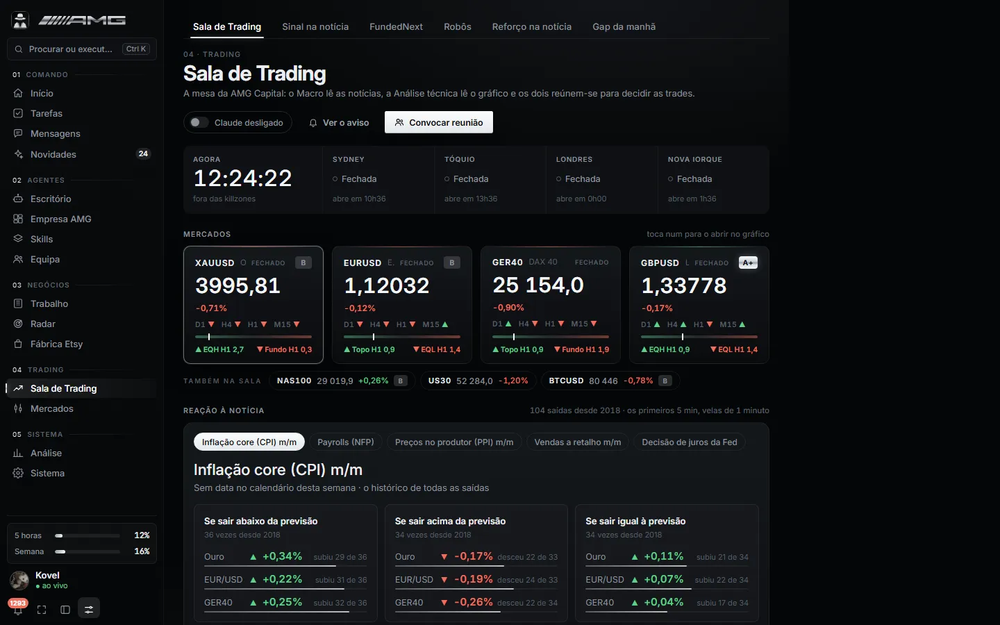
05 · Software · trading tools
Trading room
SoftwareDashboard
The task
Prices, news, tests of strategies and trading accounts were spread over ten different windows.
What we did
Live markets and news reaction in one screen
Every strategy tested on years of past prices
Connected to the trading accounts, with limits that protect the money
Alerts to the phone
Now
One dashboard the team trades from every day.
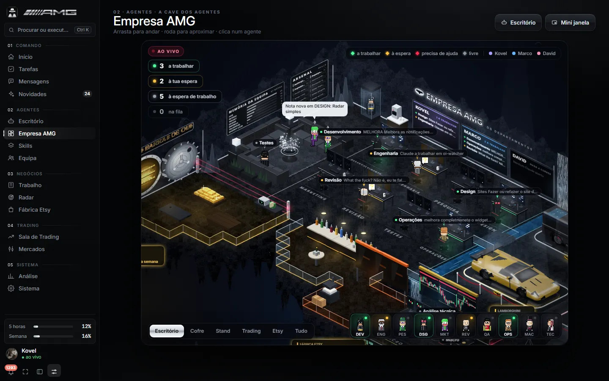
06 · Software · AI agents
AMG Hub
AI agentsDesktop + phoneSync
The task
A small team needed the output of a big one.
What we did
AI agents that take tasks and work in departments
Works on every office computer, no server to pay for
Desktop widget and phone app with push
Shared memory: every agent knows the team’s decisions
Now
The platform our own company runs on — and that we can build for yours.
Companies
Teams we have worked with
Online platform · millions of users
1win
We worked on the systems behind one of the biggest online platforms. Our job: the site keeps working fast even when huge numbers of people use it at the same time.
Big trafficAlways online
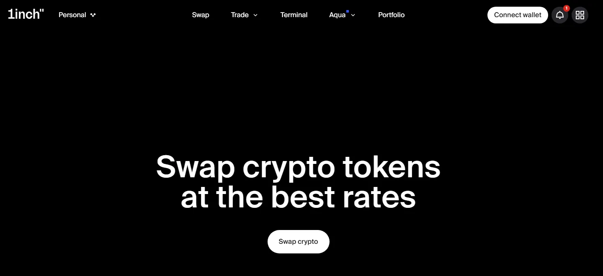
Crypto exchange service
1inch
Websites and tools for 1inch, a service where people exchange crypto. Everything has to be clear, fast and exact — people move real money there.
WebsitesCrypto
GTProtocol
Crypto + AI platform
GT Protocol
A platform where AI helps people trade crypto: it builds a strategy, tests it on past data and runs it automatically.
AICryptoPlatform
More projects
Apps, bots and platforms for businesses
Telegram bot
Crypto signals bot
Every day it finds charts that look like today’s and shows what happened next. The trader gets the picture in Telegram and decides in seconds.
TelegramAI
Paid product · 100+ users
Crypto arbitrage parser
Shows the moment the same coin is cheaper on one exchange than on another, so users can earn on the difference. People pay a subscription to use it.
SubscriptionCrypto
Paid product
MEXC arbitrage software
Software that finds price differences and trades them automatically. Dozens of people bought it; on the best day one user earned over $7,000.
AutomationCrypto
Trading system
Microservice trading system
A system that keeps working fast when thousands of requests come at once, and grows with the business instead of slowing down.
SpeedReliability
Web platform
Trading platform
A complete trading website: sign-up, account, charts and deals — the client’s whole product, from the screen to the server.
WebsiteFinance
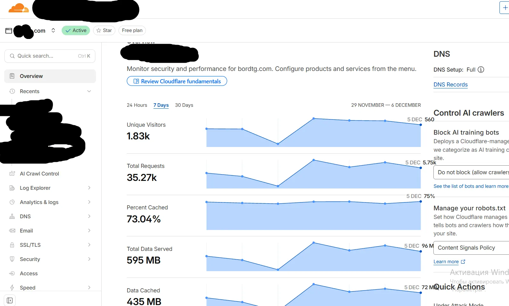
Websites · 500+ visitors a day
High-load sites for traffic teams
Websites and tools for a marketing team that brings traffic from ads. More than 500 people use them every day, and they do not go down.
WebsitesMarketing
AI tool
AI interview assistant
Select a question on the screen and the AI sends a short answer to your phone. Made for practising job interviews.
AITelegram
Sales automation
OLX auto-posting
Kept a client’s listings at the top of OLX all day, every day, without paying for promotion. More views, more calls.
More salesAutomation
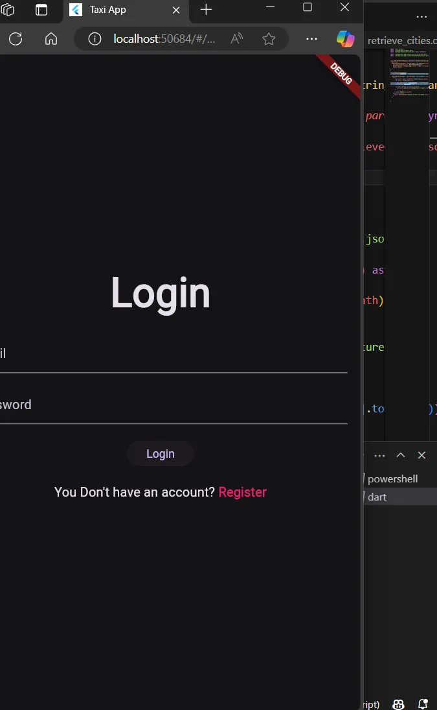
Mobile app
Taxi system
A taxi app: the client orders a ride, the driver accepts it and both see the trip on the map.
AppBooking
Web system for a hotel
Hotel management system
Rooms, bookings and guests in one place, so the reception sees free rooms and new bookings at a glance.
BookingsWeb system
Want a project like these?
Tell us about your business — we answer within one working day with a plan, a price and a deadline.